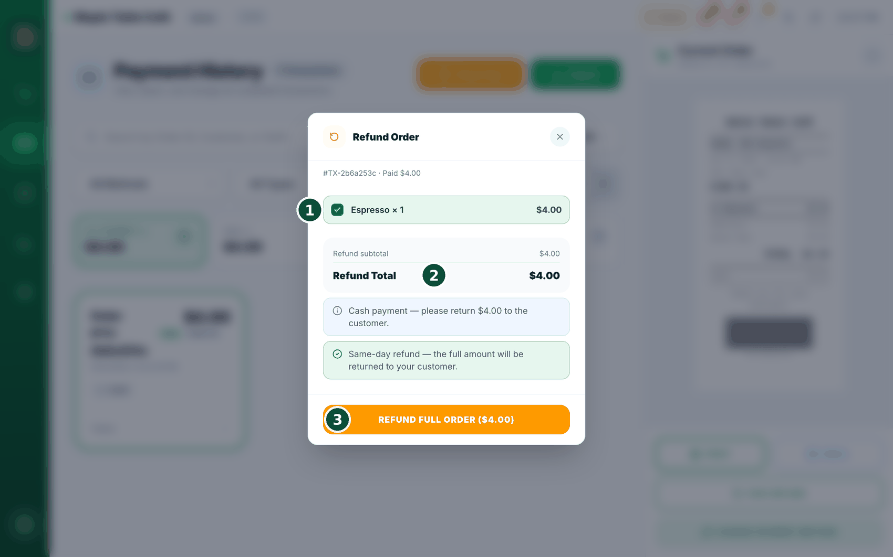
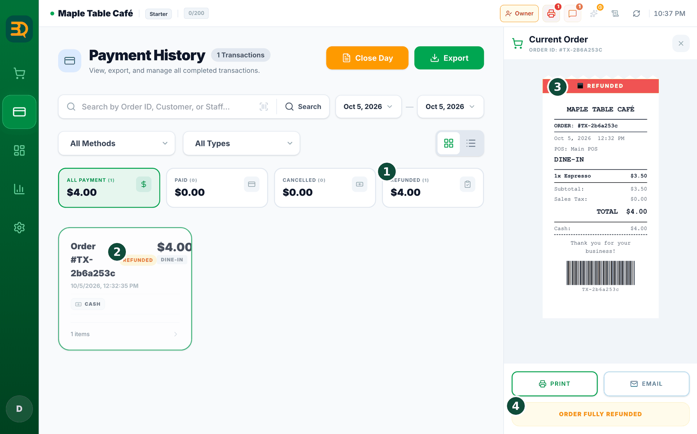

9退款
退款就是把钱退还给顾客。BrewDesk 让这件事更安全：必须先由经理同意，因此不会被滥用。


- 在左侧边栏进入 Manage（管理）› Payment History（支付记录）。
- 点击要退款的订单将其打开。
- 点击右侧小票下方的 FAIR-REFUND（公平退款）按钮（它以大写字母显示）。

- 选择全额退款以退还全部款项（当天可用）。或选择部分退款，只退还部分商品或部分金额。
- 由经理输入其 PIN（一个保密代码）表示同意。

- 退款完成。BrewDesk 会记录下来，并自动为您修正当天的合计。
什么是 PIN？它是一个简短的保密代码，类似银行卡上的密码，可以防止误操作造成退款。
部分退款现在会打印部分小票。退款单只列出您实际退钱的商品，下方的合计（小计、折扣、服务费、税费）现在也是已退款的那一部分，而不是原订单的数字。因此顾客把单据加起来，恰好就是退回到其银行卡上的金额。